Product description:
Name: Mechanical gaming mouse
Working hours: ≈90 hours
Compatible Devices: Smartphones, Tablets, Laptop with Bluetooth functionality
Product Weight:≈93g
Product function: Make device work more easy
Function 1: Bluetooth connection/2.4G mode
Function 2: 6-key layout
Function 3: Backlight function
Function 4: Rechargeable
Function 5: 3 Level DPI adjustable
Function 6: Suitable for various devices
The above data are measured by the AIEACH laboratory, the actual use will be slightly different depending on the specific circumstances.
We support wholesale and drop shipping, contact us for preferential prices.
Mechanical gaming mouse
Wireless connection, get rid of the shackles of wired, colorful backlight, comfortable to hold.
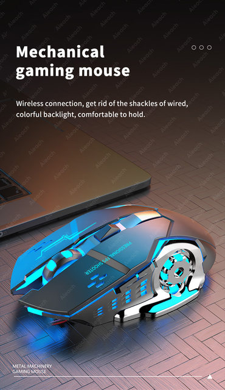
Get rid of the wire bondage,Suitable for all kinds of work.
Bluetooth + USB receiver dual-mode connection, suitable for PC computers, notebook computers, tablet.
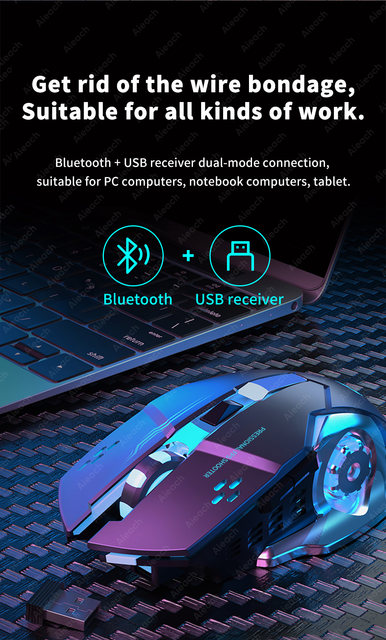
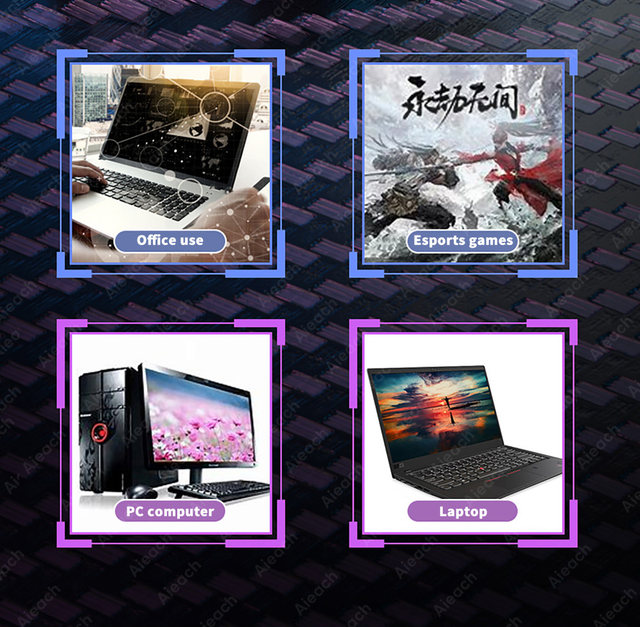
Three-level DPI is adjustable.
One key to adjust the mouse sliding speed, adapt to different devices.
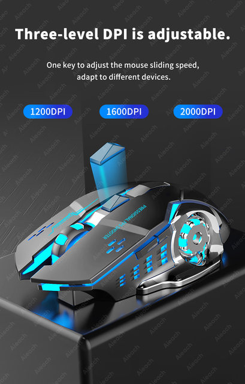
Colorful backlit breathing light
The ever-changing backlight comes out of the mouse, which is very cool.
Note: The light is a constantly changing breathing light, and the picture is only a snapshot of instantaneous changes.
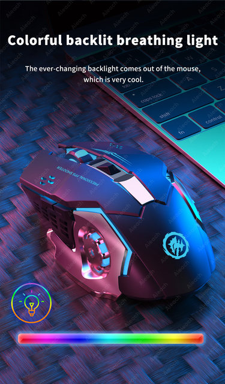
6-key layout
The mouse is equipped with side double buttons to satisfy the game settings.
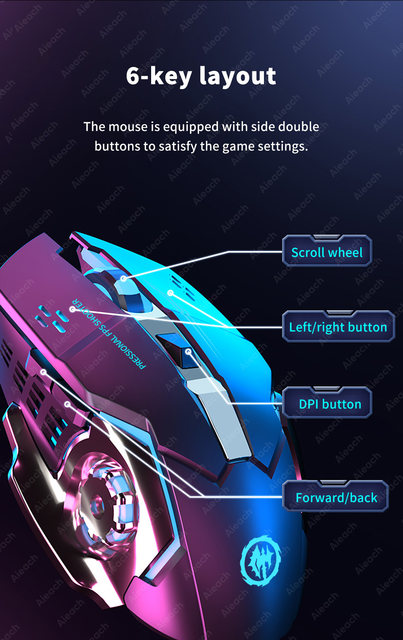
Large capacity battery
It can be used for 90 hours on a single charge.
The above data are measured by the AIEACH laboratory, the actual use will be slightly different depending on the specific circumstances.
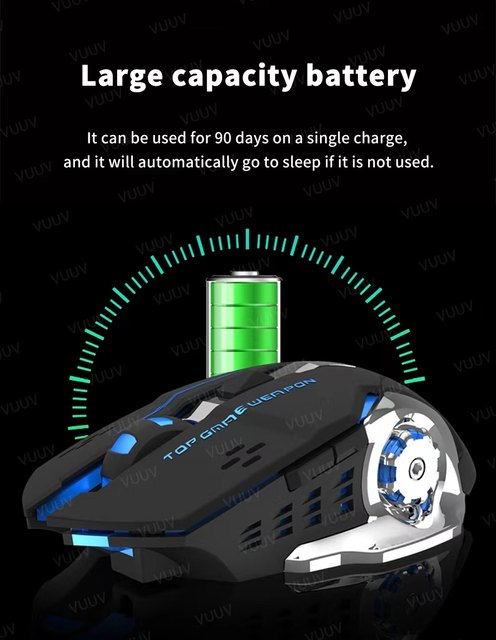
Ergonomics, comfortable to hold.
The ergonomics curve fits the palm better and is suitable for different grip postures.
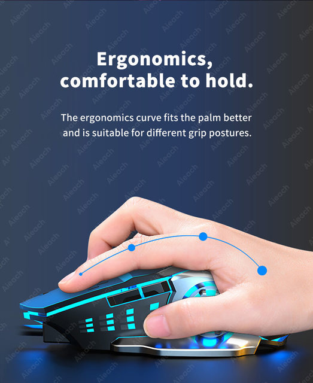
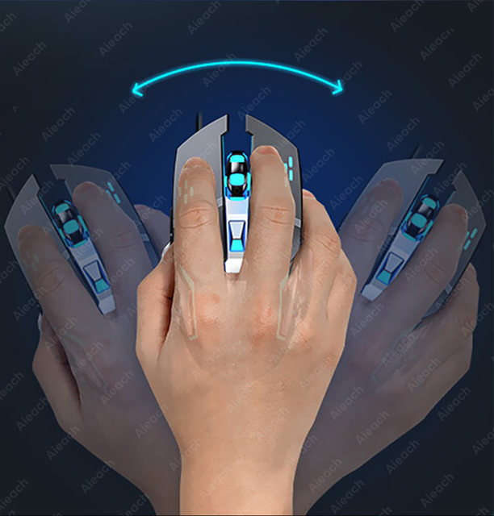
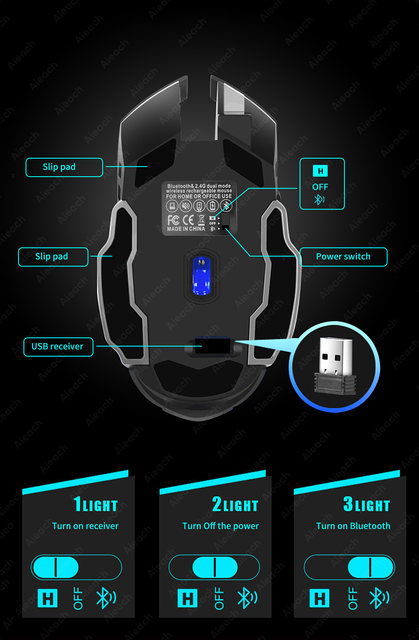
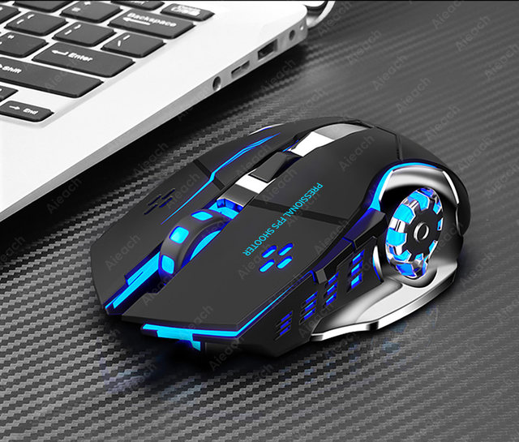
Mouse Connection Steps
Take out the receiver at the bottom of the mouse, plug it into the USB port of the computer, and wait for about 15 seconds.
Turn on the switch at the bottom of the mouse (move it to the ON position), the mouse lights up for a few seconds means: the mouse is turned on.
Push the switch to ☼ , the mouse will turn on the seven-color breathing light mode.
Bluetooth connection: Push the switch to ON and the red light flashes, then you could connect to the mouse Bluetooth.